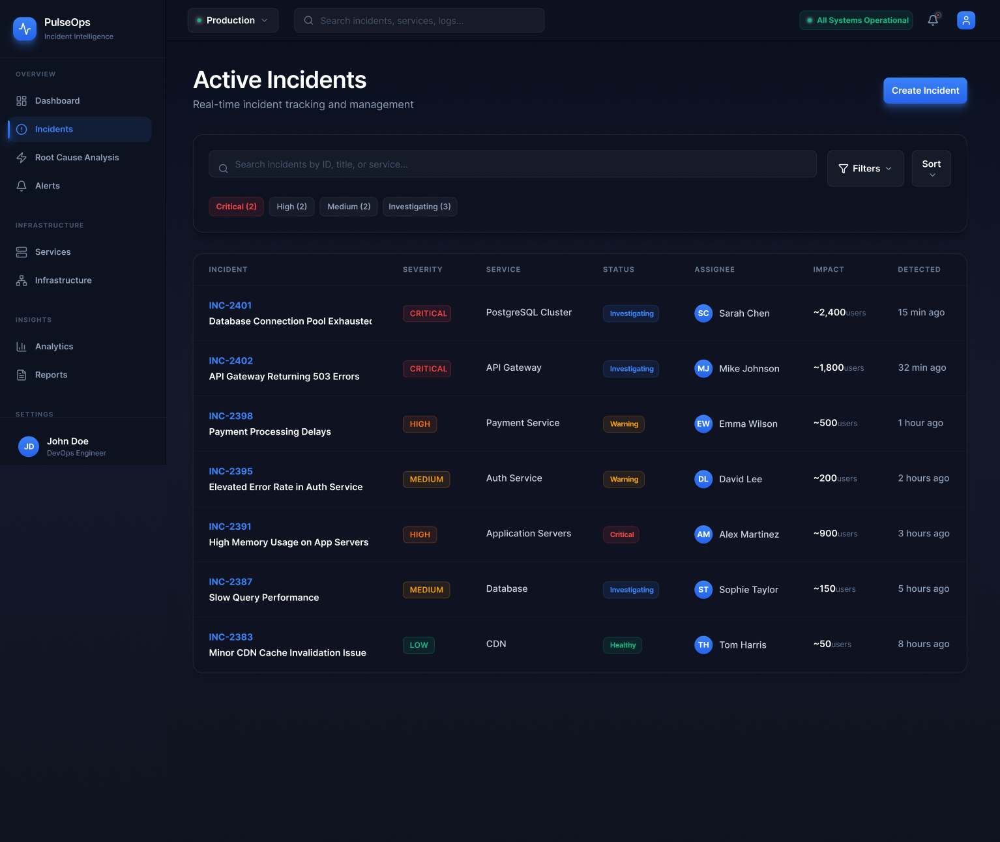
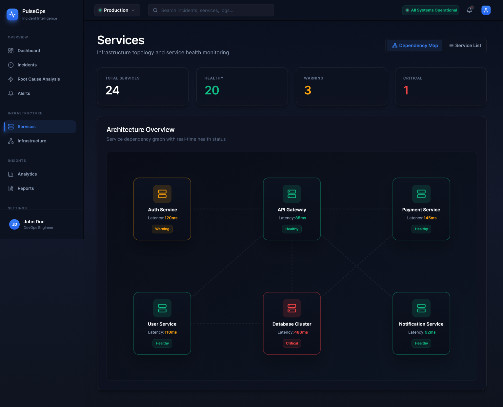
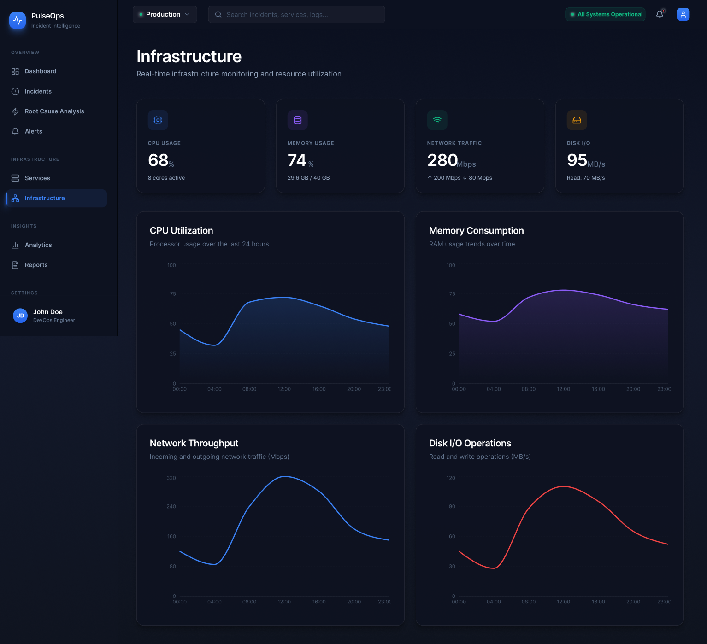
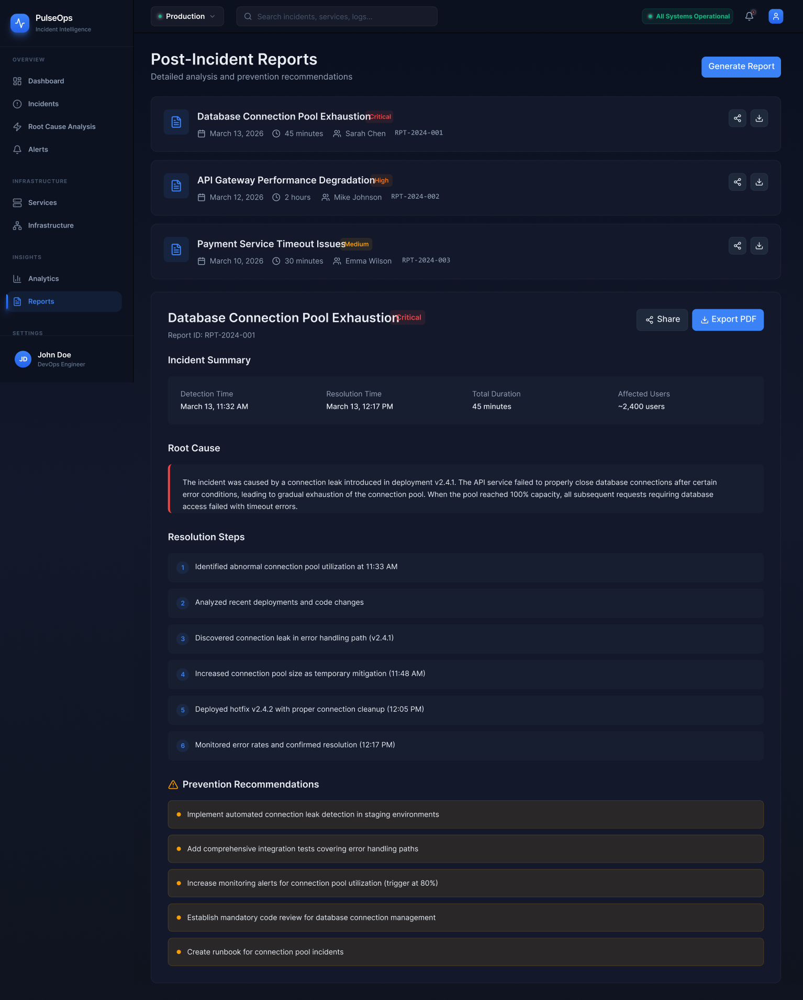

PulseOps
Designing a calmer and more structured way for engineering teams to monitor system health, triage incidents, and investigate root causes across complex infrastructure.

Monitoring tools are powerful, but during real incidents they can still feel hard to think with.
Modern distributed systems generate large volumes of telemetry data. Alerts, logs, infrastructure metrics, and service health signals are often spread across multiple tools. When something fails, engineers are expected to quickly understand what broke, how far the issue has spread, and what action should come next.
I designed PulseOps around that moment of pressure. Rather than treating the product as a collection of isolated dashboards, I approached it as one connected investigation workflow — from high-level monitoring to deep diagnosis.
The goal was not to add more data. It was to reduce uncertainty and improve orientation.
Reduce cognitive switching
Teams should not need to jump between disconnected views just to understand whether an issue is local, spreading, or already critical. Related decisions should stay close together.
Show system relationships clearly
Enterprise products become much more useful when they expose service dependencies and infrastructure relationships, not just charts and status panels.
Prioritize signal over decoration
The interface should feel premium and composed, but hierarchy, contrast, and clarity should always do more work than visual effects.
PulseOps was shaped as a complete enterprise workflow, not just a polished dashboard concept.
Operations dashboard
The dashboard establishes orientation. It gives engineering teams a clear overview of uptime, incidents, service health, and operational signals without overwhelming them with competing metrics.
Incident management
This view turns monitoring into action. Severity, ownership, status, and affected services are structured so teams can quickly understand what demands attention and coordinate response around one shared view.

Service architecture
One of the key parts of the product is making service relationships visible. This helps engineers see how failures propagate across infrastructure rather than treating each issue as an isolated event.

Infrastructure monitoring
This layer adds depth to the monitoring experience. Resource metrics, traffic patterns, and system signals provide the technical context teams need when an incident starts moving beyond one service.

Alerts and analytics
Alerts are only useful when teams can quickly judge relevance and urgency. These views were designed to support faster scanning and help users connect operational signals back to real system conditions.


Root cause analysis
This screen made the concept feel complete. Without it, the product could monitor and list incidents, but it would not truly support investigation. The goal here was to help teams move from “something is wrong” to a more informed understanding of where the issue began.

Post-incident reporting
Good enterprise tools do not stop at detection or resolution. They support the learning loop as well. This reporting view closes the system by helping teams review incidents and improve operational reliability over time.

The project feels stronger because it is framed as one product story, not just a set of polished screens.
PulseOps helped me explore how enterprise tools can feel rigorous without becoming visually cold or difficult to scan. The value of the project is not only in the interface styling, but in the way the product structure, workflows, and screen hierarchy work together.
What this project demonstrates
Enterprise workflow thinking, system visibility, information hierarchy, and the ability to design more believable B2B product experiences.
What I would improve next
I would extend the concept with collaborative incident actions, alert rule management, and more detailed annotations inside the investigation workflow.
Thanks for viewing PulseOps.
This case study was designed to feel aligned with the rest of the portfolio while still presenting a deeper enterprise product story.
Back to Work